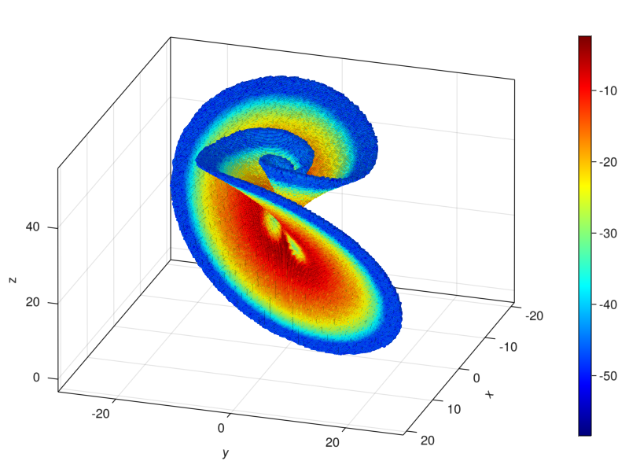

Transfer Operator and Box Measures
Mathematical Background
The transition matrix is the discretization of the transfer operator $P$ w.r.t. $f$. Formally, the transfer operator w.r.t. $f$ is defined for measures $μ$ through the equation
\[P\mu(A) = \mu (f^{-1}(A)) \quad \text{for any} \ \ A \ \ \text{measurable}\]
We will use a Galerkin approximation for $P$ which maintains the eigenvalues and cyclic behavior of $P$. To do this, we project to a subspace $\chi_B$ generated by the basis $\left\{ \chi_b\ \vert\ b \in B \right\}$ of unit measures supported on the boxes of our box set $B$. Further, we enumerate the box set $B = {b_1, b_2, ..., b_n}$ with integer indices and define the transition matrix
\[ (P^n)_{ij} = \frac{m\left(b_j \cap f^{-1}(b_i)\right)}{m(b_j)}, \quad i,\, j = 1, \ldots, n,\]
where $m$ is the lebesque measure. Finally, we define the approximate transfer operator $Q_n P : \chi_B \to \chi_B$ as the linear extension of
\[ (Q_n P)\, \chi_{b_i} = \sum_{j = 1}^n P_{ij}^n\, \chi_{b_j}, \quad i = 1, \ldots, n.\]
The operator $Q_n P$ can be created in GAIO.jl by calling
T = TransferOperator(F, B)where F is a BoxMap and B is a box set. In this case, the codomain is generated automatically. This is not always ideal, so the codomain can be specified as an argument
T = TransferOperator(F, B, B)T acts as a matrix in every way, but the explicit transition matrix $P^n_{ij}$ can be generated by calling
M = Matrix(T)It is important to note that TranferOperator is only supported over the box set B, but if one lets a TranferOperator act on a BoxFun vie multiplication (see the example), then the support B is extended "on the fly" to include the support of the BoxFun.
GAIO.TransferOperator — TypeTransferOperator(map::BoxMap, domain::BoxSet)
TransferOperator(map::BoxMap, domain::BoxSet, codomain::BoxSet)Discretization of the Perron-Frobenius operator, or transfer operator. Implemented as a sparse matrix with indices referring to two BoxSets: domain and codomain.
There exists two constructors:
- only provide a
boxmapand adomain. In this case, thecodomainis generated as the image ofdomainunder theboxmap.julia> P = BoxPartition( Box((0,0), (1,0)), (10,10) ) 10 x 10 - element BoxPartition julia> domain = BoxSet( P, Set((1,2), (2,3), (3,4)) ) 3 - element Boxset over 10 x 10 - element BoxPartition julia> T = TransferOperator(boxmap, domain) TransferOperator over [...] - provide
domainandcodomain. In this case, the size of the transition matrix is given.julia> codomain = domain 3 - element Boxset over 10 x 10 - element BoxPartition julia> T = TransferOperator(boxmap, domain, codomain) TransferOperator over [...]
Fields:
mat:SparseMatrixCSCcontaining transfer weights. The indexT.mat[i,j]represents the transfer weight FROM thej'th box incodomainTO thei'th box indomain.boxmap:SampledBoxMapmap which dictates the transfer weights.domain:BoxSetwhich contains keys for the already calculated transfers. Effectively, these are column pointers, i.e. thejth column ofT.matcontains transfer weights FROM box Bj, where Bj is thejth box ofdomain.codomain:BoxSetwhich contains keys for the already calculated transfers. Effectively, these are row pointers, i.e. theith row ofT.matcontains transfer weights TO box Bi, where Bi is theith box ofcodomain.
domain -->
codomain . . . . .
| . . . . .
| . . . . .
v . . mat . .
. . . . .
. . . . .
. . . . .
. . . . .It is important to note that TranferOperator is only supported over the box set domain, but if one lets a TranferOperator act on a BoxFun, e.g. by multiplication, then the domain is extended "on the fly" to include the support of the BoxFun.
Methods Implemented:
:(==), axes, size, eltype, getindex, setindex!, SparseArrays.sparse, Arpack.eigs, LinearAlgebra.mul! #, etc ...Implementation detail:
The reader may have noticed that the matrix representation depends on the order of boxes in support. For this reason an OrderedSet is used. BoxSets using regular Sets will be copied and converted to OrderedSets.
.
GAIO.BoxFun — TypeBoxFun(partition, vals)Discretization of a measure over the domain partition.domain, as a piecewise constant function over the boxes of partition.
Implemented as a sparse vector over the indices of partition.
Fields:
partition: AnAbstractBoxPartitionwhose indices are used
for vals
vals: A dictionary whose keys are the box indices from
partition, and whose values represent the values of the function.
Methods implemented:
length, sum, iterate, values, isapprox, ∘, LinearAlgebra.norm, LinearAlgebra.normalize!.
Base.sum — Methodsum(f, μ::BoxFun)
sum(f, μ::BoxFun, B::BoxSet)
μ(B) = sum(x->1, μ, B)Integrate a function f using μ as a density, that is, if boxfun is the discretization of a measure $\mu$ over the domain $Q$, then approximate the value of
\[\int_Q f \, d\mu .\]
If a BoxSet B is passed as the third argument, then the integration is restricted to the boxes in B
\[\int_{Q \cap \bigcup_{b \in B} b} f \, d\mu .\]
The notation μ(B) is offered to compute $\mu (\bigcup_{b \in B} b)$.
Base.:∘ — Method∘(f, boxfun::BoxFun) -> BoxFun
∘(boxfun::BoxFun, F::BoxMap) -> BoxFunPostcompose the function f with the boxfun, or precompose a BoxMap F with the boxfun (by applying the Koopman operator). Note that the support of BoxFun must be forward-invariant under F.
Example : Invariant Measure of the Lorenz Attractor
using GAIO
# the Lorenz system
const σ, ρ, β = 10.0, 28.0, 0.4
v((x,y,z)) = (σ*(y-x), ρ*x-y-x*z, x*y-β*z)
f(x) = rk4_flow_map(v, x)
center, radius = (0,0,25), (30,30,30)
P = BoxPartition(Box(center, radius), (256,256,256))
F = BoxMap(f, P)
x = (sqrt(β*(ρ-1)), sqrt(β*(ρ-1)), ρ-1) # equilibrium
S = cover(P, x)
W = unstable_set(F, S)
T = TransferOperator(F, W, W)
(λ, ev) = eigs(T)
μ = log ∘ abs ∘ ev[1]BoxFun in 256 x 256 x 256 - element BoxPartition with 202300 stored weightsusing GLMakie: Figure, Axis3, plot!, Colorbar
fig = Figure();
ax = Axis3(fig[1,1], azimuth=pi/10);
ms = plot!(ax, μ, colormap=:jet);
Colorbar(fig[1,2], ms);
Example 2: Showcase of BoxFun Functionalities
using GAIO
# the unit box [-1, 1]²
domain = Box((0.0, 0.0), (1.0, 1.0))
partition = BoxPartition(domain, (16,8))
# left / right halves of the domain
left = cover(partition, Box((-0.5, 0.0), (0.5, 1.0)))
right = cover(partition, Box((0.5, 0.0), (0.5, 1.0)))
full = cover(partition, :)
# create measures with constant weight 1 per box
n = length(left)
μ_left = BoxFun(left, ones(n))
μ_right = BoxFun(right, ones(n))
μ_full = BoxFun(full, ones(2n))
# vector space operations are supported for measures
μ_left + μ_right == μ_full
μ_full - μ_left == μ_right
μ_left - μ_full == -μ_right
2*μ_left + 2*μ_right == μ_full + μ_full
μ_left/2 + μ_right/2 == μ_full/2
# horizontal translation map
f((x, y)) = (x+1, y)
# BoxMap which uses one sample point in the center of each box
F = BoxMap(:sampled, f, domain, center, center)
# compute the transfer operator over the domain
T = TransferOperator(F, full, full)
# Compute the pushforward / pullback measures by using the transfer operator
T*μ_left == μ_right
T'μ_right == μ_left
# integration w.r.t. the measures
μ_full(domain) == volume(domain)
g(x) = 2
sum(g, μ_full) == 2*volume(domain)
(2*μ_full)(domain) == 2*volume(domain)
μ_full2 = (x -> 2x) ∘ μ_full
μ_full2(domain) == 2*volume(domain)true